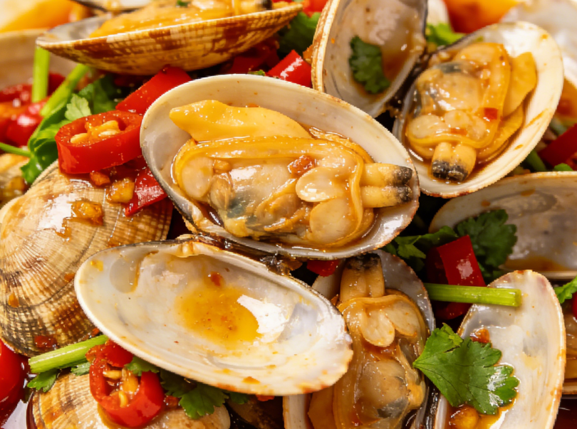
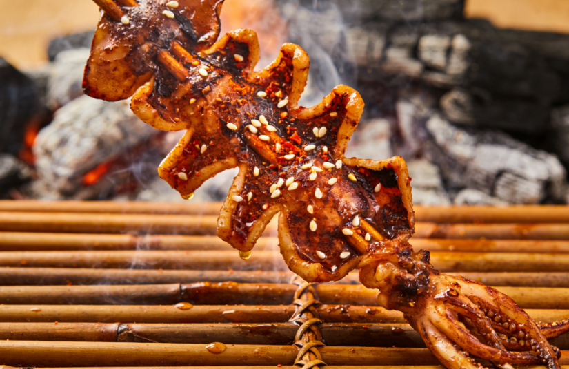
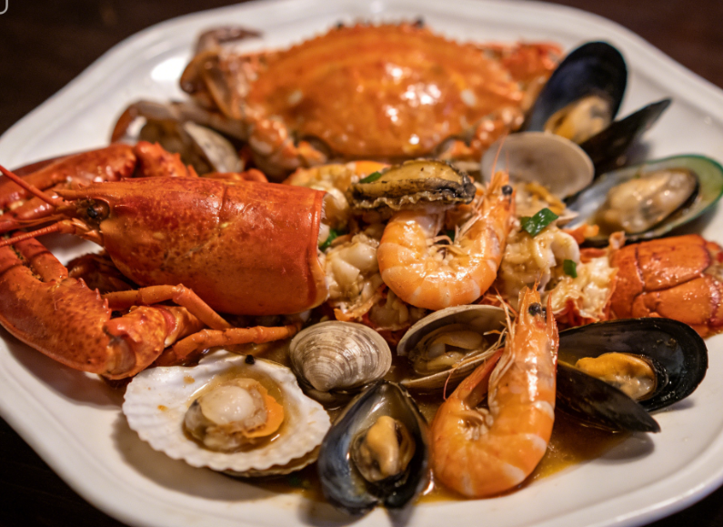
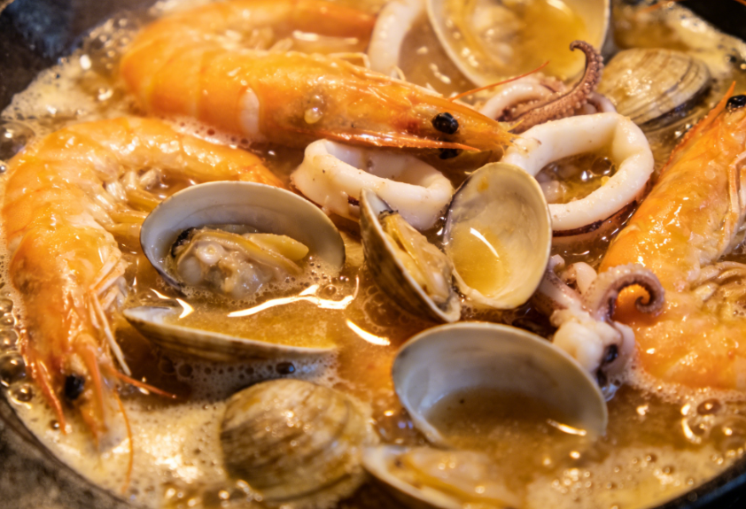
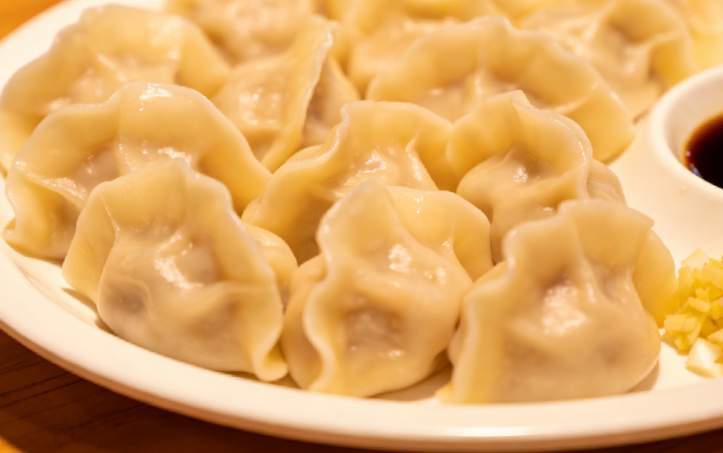
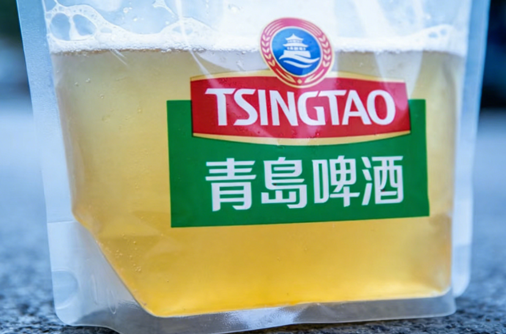

Authentic dishes you must try when visiting Qingdao

The undisputed king of Qingdao street food. Fresh clams stir-fried with garlic, chili, and a secret blend of spices create an addictive dish that pairs perfectly with Tsingtao Beer poured from a plastic bag.

Fresh-caught squid grilled over charcoal and brushed with a sweet and savory sauce. The tentacles are crispy while the body remains tender, making it the most popular late-night snack at Pichai Courtyard.

A magnificent spread of the day's freshest catch including oysters, abalone, sea cucumber, prawns, and seasonal fish. Served at Yunxiao Road Food Street where fishermen bring their harvest directly to restaurants.

A unique Qingdao creation where fresh shrimp and crabs are braised in Tsingtao Beer with ginger and scallions. The beer adds a subtle hoppy bitterness that enhances the natural sweetness of the seafood.

Handmade dumplings filled with fresh sea cucumber, shrimp, and pork, wrapped in thin translucent skins. Served with aged vinegar and ginger dip, these dumplings represent the finest of Shandong culinary tradition.

The most iconic Qingdao experience: fresh draft Tsingtao Beer served in a plastic bag from street vendors. The raw, unfiltered beer known as "Er Qi" is only available locally and offers a flavor you cannot find anywhere else.
What makes Qingdao's dining scene extraordinary
The legendary Pichai Courtyard comes alive after dark with sizzling woks, aromatic skewers, and crowds of food lovers. It has been the heart of Qingdao's street food culture for over a century.
As the birthplace of Shandong cuisine, one of China's Eight Great Cuisines, Qingdao's food traditions run deep. Emphasis on fresh seafood, precise knife skills, and delicate seasonings defines the local palate.
Qingdao's unique beer culture means locals have perfected the art of pairing fresh seafood with cold Tsingtao. From upscale pairings to casual street-side feasts, beer is the universal companion.
Where the city's fishermen sell their morning catch directly to restaurants. The transparency from ocean to table ensures the freshest possible seafood dining experience in all of China.